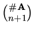
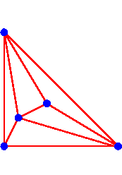

Next: 2.iii.c. Kushnirenko's Conjecture
Up: 2.iii. Real Solutions to Sparse Polynomial
Systems
Previous: 2.iii.a. Constructive Lower Bounds
2.iii.b. Fewnomial Upper Bounds
These definitions, constructions, and results apply to
what have come to be known as fewnomial systems.
A fewnomial is a polynomial f with few monomials--the
monomials of f are members of some set A not
necessarily equal to the lattice points within its convex hull.
In particular, the results of Section 2.iii.a give
lower bounds on
the maximum number of real solutions r(A) to a system of fewnomials
whose monomials are from A.
Here, we use a regular triangulation Aw of the point
set A induced from a lifting function
w : A --> Q.
When n = 1, consider the binomial (a fewnomial) system
xd - 1 = 0 .
This has d complex solutions.
We similarly expect that the number of complex solutions to a fewnomial system
to be equal to the BKK bound.
The above binomial system has either 1 or 2 real solutions, and so the number
of real solutions to a fewnomial system should be less than the BKK
bound.
The question is: How much less?
Khovanskii [Kh1,Kh2] established a very general result concerning
systems where each fi is a polynomial function of the
monomials xa for a in A.
He proves that the number of real solutions to such a system is at most
2n2N(n+1)#A,
where N is #A(#A-1)/2 (= #A choose 2), and
#A is the number of monomials in A.
When the polynomial functions are linear, they are polynomials with monomials
from A, and hence we have Khovanskii's fewnomial bound.
2n2N(n+1)#A
While this bound seems outrageously large, it does not depend upon the
volume of the convex hull of A, but rather on the algebraic
complexity--the ambient dimension n and the size #A
of A.
That such a bound exists at all was revolutionary.
We compare this complexity bound to the combinatorial upper
bound (2.6) on the
number of real solutions to a lifted fewnomial
system (2.4) in
the limit as t approaches 0.
The invariant e(F) of a facet of the regular triangulation
Aw of A is at most n.
Thus
|
r is at most 2n times the number of facets
Aw |
Since a facet involves n+1 points from A, this is in turn bounded
by
| 2n times the
binomial coeffecient |  |
. |
This bound is typically much lower than Khovanskii's bound.
For example, consider two trinomials in two variables.
Here n=2, and after multiplying each equation by a suitable monomial,
we have #A= 5.
Thus we have Khovanskii's fewnomial bound
r(A) is at most
22 210 35
= 995,328 .
In contrast, a triangulation of 5 points in the plane has at most 5 simplices

and so the bound r for limiting lifted systems involving the same 5
monomials is 22 5 = 20 .
Next: 2.iii.c. Kushnirenko's Conjecture
Up: 2.iii. Real Solutions to Sparse Polynomial
Systems
Previous: 2.iii.a. Constructive Lower Bounds